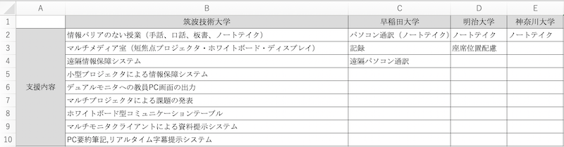
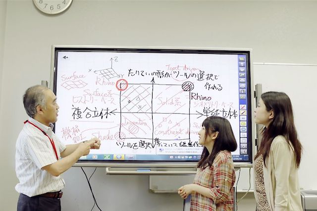
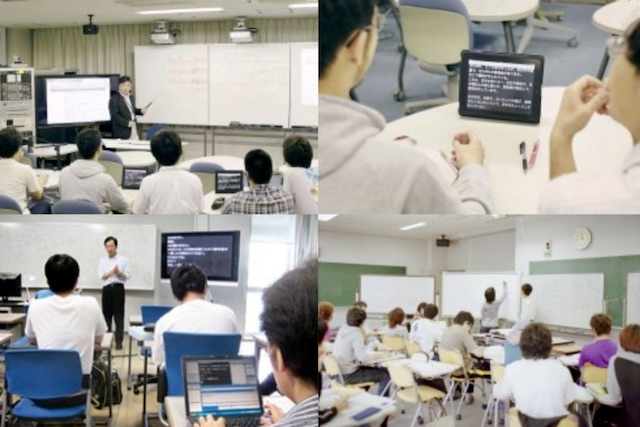
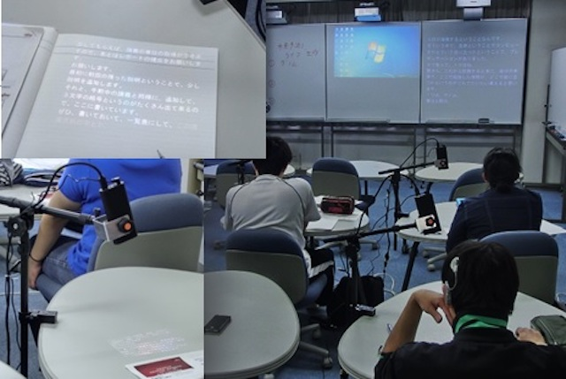
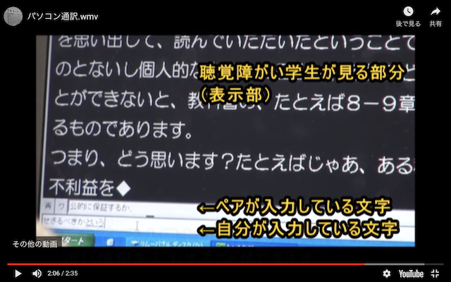
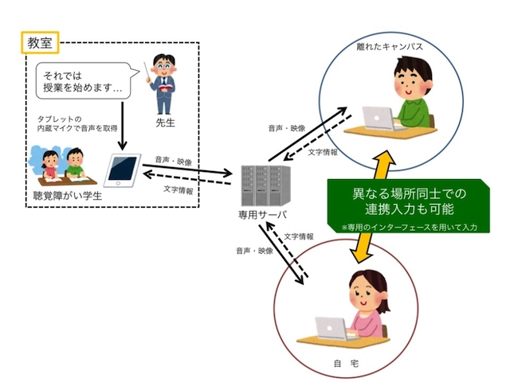

①カスタマージャーニーマップで見つけた考察を元に、
・聴覚障害者にとっての会話（コミュニケーション）の価値観、世界観を調査する。
・他大学での取り組みを調べ比較する
②事前調査アンケートにて、感情に関して健聴者・聴覚障害者の間で違うことがわかった。
今後は感情によって行動が変わるのか、聴覚障害者にに限らずに異なった障害を患った方の感情に関する論文を読んでいく。
③平塚もう学校の方とお会いして刺激を受ける。
他大学行われている聴覚障害者に向けた取り組みや支援を、神奈川大学と比較する。
今回は特に特色があった筑波技術大学と早稲田大学を取り上げる。

筑波技術大学とは、視覚障害・聴覚障害を持つ人を対象とした日本国内唯一の大学である。(健常者は入学できない、、！)
言わずもがな、日本で一番理解が進んでいる学校である。
(以下の下記画像参照元： https://www.tsukuba-tech.ac.jp/department/it/amakubo_environment/15280.html)
視覚教材、手話、口話、板書等、授業では様々伝達方法を用いて内容を伝える工夫がされている。情報バリアのない分かる実感が得られる。 
短焦点プロジェクタ・ホワイトボード・ディスプレイなどを複数配置する講義では、
資料・板書・情報保障（手話通訳や文字通訳等）などの様々な視覚的情報を必要に応じてアレンジし表示できるようになっている。
また、講師・学生間での質疑応答や議論などが自由なレイアウトで授業が行えるような机を採用している。

小型プロジェクタを学生の席に配置し、文字通訳・手話通訳・講師の様子などを机の上に表示することで情報保障が途切れないように工夫をしている。

国内の一般大学では障がい者支援室の規模が一番大きく、手厚い保証が得られる。
健常者の学生と障害を持った学生の両者が通っており、とても理想的な形である。
（神大もこういったカタチにしたいなあ！！）
2名のパソコン通訳者が、先生の話や学生の発言などの音声情報を連係してパソコンに入力する方法。
2名同時に入力するため、基本的に待機者のメモ等は必要ない。
専用のアプリケーションを使うので履歴で授業のおさらいができる。

遠隔情報保障システム「T-TAC Caption」を使用した支援。
スマートフォンやタブレットに専用のアプリケーションをインストールし、音声配信と字幕受信を行うシステムである。このシステムにより、支援者は必ずしも聴覚障がい学生と同じ教室内にいる必要はなく、離れた場所（別キャンパスや自宅など）から支援することが可能である。

我が神奈川大学選手、今年から突然SDGs（持続可能な開発目標）の実現に向けた活動を始めました。
さて、どのような手厚い支援がされているのか！！
１名のノートテイカーが、先生の話や学生の発言などを紙媒体やタイピングでサポートする。
・支援が手厚い大学は専用のHPがあったりと、サポートの体制が積極的である。
・より多くの障害を持った学生を受け入れようという姿勢が見える。
・大学規模でシステムが用意されている。(お金が出されているという意味で)
→専用のシステム・アプリケーションが導入してある。
→何か開発したら神大でも導入してもらえるのではないか、、！！
・他大学は障害者支援の歴史があり、歴史を重ねてきた上での子もサポート体制がある。
→神大もまだ一年目であり、ここからがスタートである。
→その手探り状態の中で、佐藤の行動がこれからの神大のサポート体制を変えられるのでは、、！
前回の 事前調査アンケート にて、健常者と聴覚障害者の間では違う感情を抱いていることがわかった。
感情によってどのような行動をするのか、聴覚障害者と感情に関しての論文を読んでみる。
『第75回全国大会講演論文集』 瀬戸就一・南保英孝・新井浩・川辺弘之・杉森公一・下村有子
ノートテイクは聴覚障害学生のための支援業務である。
しかし、ノートテイクは「速く、正確に、読みやすく」という原則を持っているため、教員が話した言葉は分かるが、授業の雰囲気や教員の口調は伝わらない。
「授業の雰囲気」は、教室内の物音、教員の口調や動作、学生・教員の視線によっても大きく変化する。
それらによって何一つ音のしない緊張感が発生したり、笑いが起こったり、和やかな授業になったりする。
もし、これらの情報が伝えられれば、聴覚障害者が授業の雰囲気を感じ取り、教員の熱意を理解し、授業に参加する意欲の向上や講義の要点を理解しやすくなると思われる。
我々はここに注目し、話者の声の調子を伝えるために臨場感フォントを作り出した。
・前回のゼミにて新林がノートテイカーの講習会へ行った感想として、
無駄なことは省き、会話の面白い所も省いてノートテイクするので、
聴覚障害者は少し可哀想や勿体無いと言う事を聞いたのでとてもタイムリーだと思った。
・自動音声入力ソフト（ 音声認識エンジン Julius- 4.2.1 ）と漫画という会話の感情や場の臨場感が視覚的に表現できるものを組み合わせたのは素直に脱帽した。
・このシステムによって、事前調査アンケートであった「健常者から出た声色が相手に伝わらないので感情が伝えずらい」というのに対して、
会話中での健常者と聴覚障害者の間では”視覚的に”ではあるが、感情を共有する事が可能である。
『教育心理学研究』 河内 清彦
・視覚障害学生及び聴覚障害学生に対し大学生が想起するイメージの意味構造を解明するため, 体育学系の男子学生108名と, 教育・社会学系の男女学生137名にイメージ連想テストを実施した。得られた2686の記述語を, KJ法により分類し, 43項目を選んだ。
・その結果, 障害学生の標的概念は, 障害, 性, 学科を超え,「痛ましさ」と「忍耐力」の軸に囲まれた意味空間に位置していたが, 記述語のレベルではグループ差がみられた。
・大学に進学した視覚障害者は、視覚障害者の中でも障害を乗り越えた特別な存在であるという見方もある。
・また、「障害学生」と「好みの学生」の標的概念とは、意味構造上相反するものであったため、つまり障害学生は好まれる存在ではなく、みしろ低高を感じる存在であり、したがって健常学生からは否定的行動を取られる可能性のある事がわかった。(P86)
・聴覚障害者は視覚障害者と違い、性格面で明るいと見られている。また聴覚障害者では見られない「普通の」というカードがあることから、聴覚障害者は補聴器などを使っていなかったら健常者と変わらないためと推測される。
KJ法：データをカードに記述し、カードをグループごとにまとめて、図解し、論文等にまとめていく。共同での作業にもよく用いられ、「創造性開発」（または創造的問題解決）に効果があるとされる。
・サークルの新歓で見られた、あまり関わりたくないという負の感情は健常者よりも割合が高くなる事がわかった。
・聴覚障害者は視覚障害者と違い、見た目的な面で健常者と何ら変わりの無い見た目であるため、大変さが伝わらないのではないか。
・論文研究対象のT大学では「かわいそう」というカードは男子の方が頻度が多く、女子は「意思が強い」「賢い」「我慢強い」と言った肯定的なものが多く、部分的には女子の方が障害者に対して肯定的である事がわかった。
夏休みに入り、何もしないで終わってしまうと思う。ので、夏休みのTODOリストを作ります。
①8/9 片桐さんと学校でドローン撮影の練習（合宿の練習）
②インターフェイスを作る練習 字幕システムの作成